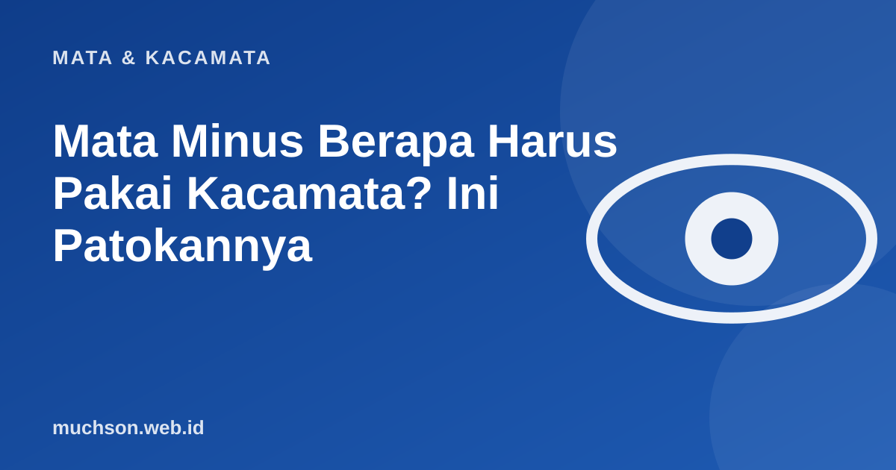

Beranda › Artikel › Mata & Kacamata
Mata & KacamataMata Minus Berapa Harus Pakai Kacamata? Ini Patokannya
Banyak orang bingung setelah diperiksa: "Minus saya cuma 0,5, perlu kacamata atau tidak?" Tidak ada satu angka ajaib yang berlaku untuk semua orang. Keputusan memakai kacamata bergantung pada keluhan, kebutuhan penglihatan sehari-hari, usia, dan rekomendasi pemeriksa mata. Berikut patokannya.

Membaca angka minus
Angka minus diukur dalam dioptri (D). Semakin besar angkanya, semakin dekat titik terjauh yang masih terlihat tajam tanpa kacamata. Secara kasar, titik jauh mata minus bisa diperkirakan dengan 1 dibagi angka minus (dalam meter).
Patokan umum
| Besar minus | Umumnya | Catatan |
|---|---|---|
| 0,25-0,50 | Sering belum perlu dipakai terus | Bisa dipakai untuk menyetir malam, menonton, atau bila terasa lelah |
| 0,75-1,50 | Banyak orang mulai butuh untuk jarak jauh | Terutama menyetir, papan tulis, presentasi |
| 2,00 ke atas | Umumnya dipakai untuk sebagian besar kegiatan | Tanpa kacamata, banyak kegiatan terganggu |
Ini patokan kasar untuk orang dewasa tanpa silinder besar. Keputusan akhir mengikuti hasil pemeriksaan dan saran dokter mata atau refraksionis, terutama bila ada silinder, perbedaan besar antar mata, atau keluhan lain.
Yang lebih penting dari angka: keluhan dan kebutuhan
Untuk mengemudi, ketajaman penglihatan jarak jauh adalah soal keselamatan. Bila minus Anda membuat rambu atau kendaraan di kejauhan kurang jelas, pakailah kacamata saat menyetir walau angkanya kecil.
Anak-anak: jangan menunggu angka besar
Pada anak, kebutuhan penglihatan jauh sangat berkaitan dengan belajar: membaca papan tulis dan mengikuti pelajaran. Anak juga jarang mengeluh karena tidak tahu bahwa penglihatannya kurang tajam. Ikuti saran dokter mata, karena pada anak ada pertimbangan perkembangan penglihatan dan pengendalian kenaikan minus.
Mitos yang sering muncul
Tanya jawab
Minus 0,5 harus pakai kacamata?
Minus 1 harus pakai kacamata terus?
Apakah memakai kacamata membuat ketergantungan?
Seberapa sering periksa mata?
Sumber dan bacaan lanjut
- WHO: Blindness and vision impairment (fact sheet)
- WHO: World report on vision (2019)
- Mata minus vs silinder (artikel terkait)
- Kapan harus ganti kacamata (artikel terkait)